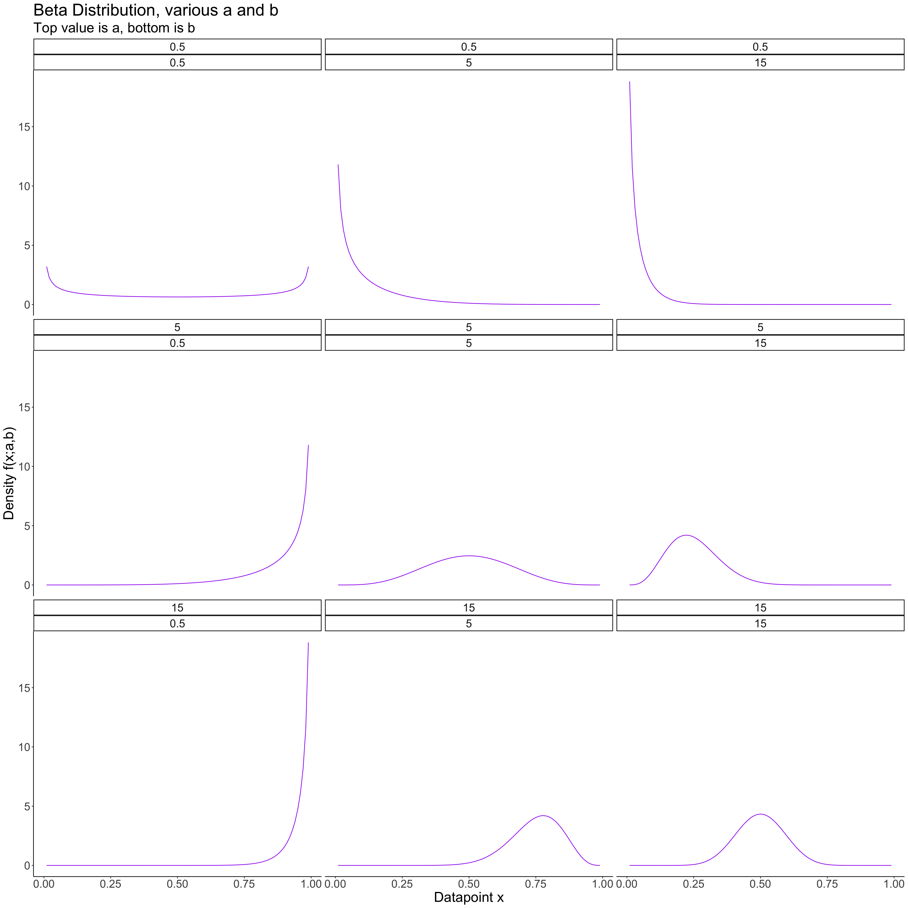
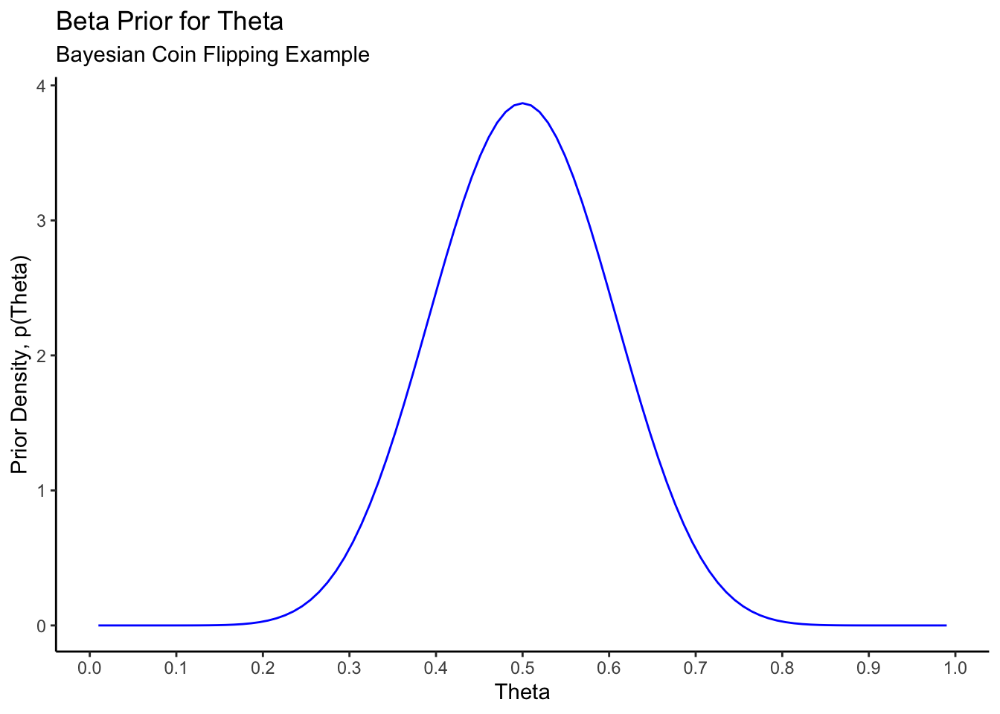
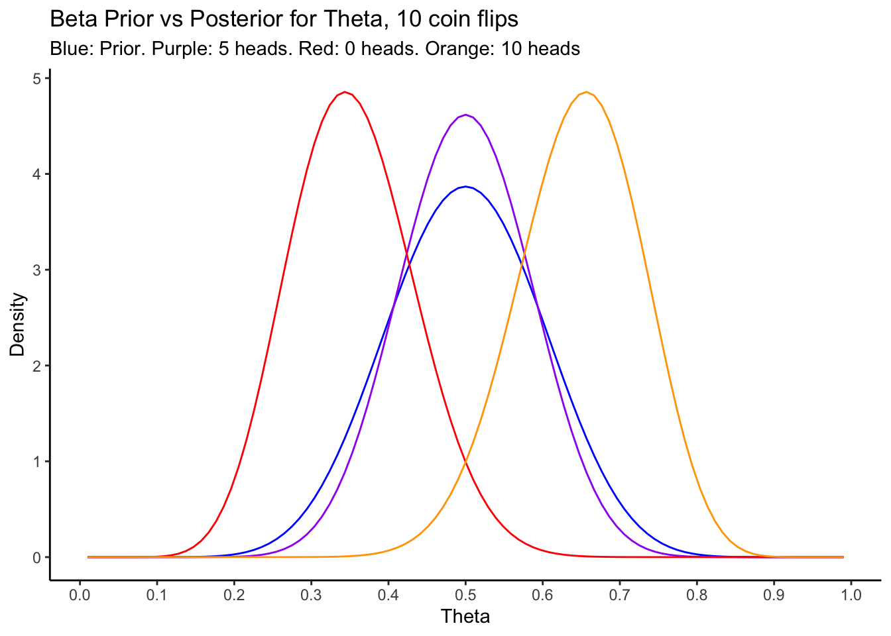

Chapter 11 Supplement to Evans & Rosenthal Section 7.2
This chapter is a supplement to Chapter 7: Bayesian Inference, section 2: Estimation. This is to support the Bayesian Inference sections of STA238. Materials in this tutorial are taken from Alex’s comprehensive tutorial on Bayesian Inference, which is very long and outside the scope of this course.
The assigned exercises associated with this material are from Evans and Rosenthal (E&R), as follows: E&R 7.2.1, 7.2.2, 7.2.3, 7.2.4, 7.2.5, 7.2.6; 7.2.12a; 7.2.14
11.1 Estimation in Bayesian Inference: general ideas
The case where there are only two possible parameter values is useful for examples, but not common in practice. More realistic is the case where \(0 < \theta < 1\), and we need to use the observed data to estimate \(\theta\).
Intuition and frequentist results dictate that a “good” estimator of \(\theta\) is the sample proportion number of heads, \[ \hat{\theta}_{freq} = \frac{1}{n}\sum_{i=1}^{n}X_{i} \] This makes sense; of course the best guess of the value of the probability of heads based on one sample is just the relative frequency with which \(X\) is heads in that sample. It’s also the maximum likelihood estimator, and the unbiased estimator with minimum variance. Let’s see how this estimator, which is optimal from a frequentist perspective, behaves compared to what we come up with using Bayesian estimation.
11.1.1 The Prior
The new parameter space is \(\Theta = (0,1)\). Bayesian inference proceeds as above, with the modification that our prior must be continuous and defined on the unit interval \((0,1)\). This reflects the fact that our parameter can take any value on the interval \((0,1)\). Choosing the prior is a subjective decision, and is slightly more difficult in the continuous case because interpreting densities is harder than interpreting discrete probability mass functions.
In a nutshell, we should choose our prior distribution such that values of \(\theta\) that we think are reasonable have high probability under the prior, and values of \(\theta\) that we think are not reasonable have low probability under the prior. There is a lot more that goes into the choice of prior in more complicated applied problems, but this is always the basic idea.
A popular choice for a prior for a binomial likelihood like we have here is the beta distribution, \[ \begin{aligned} \theta &\sim Beta(a,b) \\ f(\theta;a,b) &= \theta^{a-1}(1-\theta)^{b-1}, 0 < \theta < 1, a > 0, b > 0 \\ E(\theta) &= \frac{a}{a+b} \\ Var(\theta) &= \frac{ab}{(a+b)^2 (a+b+1)} \end{aligned} \] The Beta distribution is defined on \(0,1\) and itself has two parameters \(a,b\) which control the shape of the distribution, and its moments. If a parameter having a mean and variance makes you uncomfortable at first, try interpreting these quantities less literally; the mean is just the “centre” of the possible values of \(\theta\) as weighted by their probabilities, and the variance (or more accurately, the standard deviation) roughly describes the size of the region around the mean in which \(\theta\) is likely to fall. This just gives a measure of how “sure” we are, before seeing the results of any coin flips, that \(\theta\) is near the centre of its possible values.
Let’s visualize the prior distribution in order to help us specify the parameters \(a,b\) that will give us a reasonable prior:
# Generate plot data- dbeta evaluated at x and a,b for x on a grid between 0 and 1 and various values of a,b
expand.grid(a = c(.5,1,2),b = c(.5,1,2)) %>%
pmap_dfr(~data_frame(x = seq(0.01,0.99,by=0.01),y = dbeta(x = x,shape1=.x,shape2=.y),a = .x,b = .y)) %>%
ggplot(aes(x = x,y = y)) +
theme_classic() +
facet_wrap(a~b) +
geom_line(colour = "purple") +
labs(title = "Beta Distribution, various a and b",
subtitle = "Top value is a, bottom is b",
x = "Datapoint x",
y = "Density f(x;a,b)") +
theme(text = element_text(size = 22))
The Beta distribution is very flexible; different values of a and b give very different shapes. If we thought extreme values (close to 0 or 1) of \(\theta\) were likely, we could choose a prior with a and b both less than 1; if we think middle values are more likely, we can choose a and b to be greater than 1.
For our example, we will choose a Beta(12,12) distribution, for reasons we will discuss below in the section on choosing prior distributions. This looks like this:
data_frame(x = c(0.01,0.99)) %>%
ggplot(aes(x = x)) +
theme_classic() +
stat_function(fun = dbeta,
args = list(shape1 = 12,shape2 = 12),
colour = "blue") +
labs(title = "Beta Prior for Theta",
subtitle = "Bayesian Coin Flipping Example",
x = "Theta",
y = "Prior Density, p(Theta)") +
scale_x_continuous(breaks = seq(0,1,by=0.1))
This prior puts strong weight on the coin being close to fair; values below \(\theta = 0.3\) and \(\theta = 0.7\) have very little prior probability. This can be verified:
# Prior probability of theta being between 0.3 and 0.7
pbeta(0.7,shape1=12,shape2=12) - pbeta(0.3,shape1=12,shape2=12)[1] 0.9571Most of the mass of the distribution is between \(0.3\) and \(0.7\).
11.1.2 The Posterior
Our prior has density \[ p(\theta;a,b) = \frac{\Gamma(a+b)}{\Gamma(a)\Gamma(b)}\theta^{a-1}(1-\theta)^{b-1} \] Our likelihood remains the same as before: \[ p(X|\theta) = \theta^{\sum_{i=1}^{n}x_{i}}(1-\theta)^{n - \sum_{i=1}^{n}x_{i}} \] Bayes’ Rule is still used to compute the posterior from these quantities; however, it looks slightly different now: \[ \begin{aligned} p(\theta|X) &= \frac{p(X|\theta)p(\theta)}{p(X)} \\ &= \frac{p(X|\theta)p(\theta)}{\int_{0}^{1}p(X|\theta)p(\theta)d\theta} \end{aligned} \]
Now, because \(\theta\) is defined on a continuous interval, the marginal likelihood/model evidence/normalizing constant is computed via integrating the joint distributionn of \(X\) and \(\theta\) over the range of \(\theta\).
In this example, the marginal likelihood and the posterior can be computed explicitly as follows: \[ \begin{aligned} p(X) &= \int_{0}^{1}p(X|\theta)p(\theta)d\theta \\ &= \int_{0}^{1} \theta^{\sum_{i=1}^{n}x_{i}}(1-\theta)^{n - \sum_{i=1}^{n}x_{i}} \frac{\Gamma(a+b)}{\Gamma(a)\Gamma(b)}\theta^{a-1}(1-\theta)^{b-1} d\theta \\ &= \frac{\Gamma(a+b)}{\Gamma(a)\Gamma(b)} \times \int_{0}^{1} \theta^{\sum_{i=1}^{n}x_{i} + a - 1}(1-\theta)^{n - \sum_{i=1}^{n}x_{i} + b - 1} d\theta \\ &= \frac{\Gamma(a+b)}{\Gamma(a)\Gamma(b)} \times \frac{\Gamma(\sum_{i=1}^{n}x_{i} + a)\Gamma(n - \sum_{i=1}^{n}x_{i} + b)}{\Gamma(n + a + b)} \end{aligned} \]
How did we evaluate that integral and get to the last line? We recognized the integrand as being the \(\theta\)-dependent part of a \(Beta(\sum_{i=1}^{n}x_{i} + a,n - \sum_{i=1}^{n}x_{i} + b)\) density; hence it integrates to the reciprocal of the appropriate normalizing constant. This trick is commonly used in examples illustrating Bayesian inference; it shouldn’t be taken from this, though, that this integral is always easy to evaluate like this. It is almost never easy, or even possible, to evaluate this integral in anything beyond these simple examples- more on this later.
Exercise: use this trick to “show” that \[\begin{equation} \int_{-\infty}^{\infty}e^{-x^{2}}dx = \sqrt{\pi} \end{equation}\] and \[\begin{equation} \int_{0}^{\infty}x^{\alpha}e^{-\beta x} = \frac{\Gamma(\alpha + 1)}{\beta^{(\alpha + 1)}} \end{equation}\] where \(\Gamma(\cdot)\) is the Gamma function. Hint: the wikipedia articles on the Normal and Gamma distributions will be helpful.
With \(p(X)\) available, we can explicitly compute the posterior: \[ \begin{aligned} p(\theta|X) &= \frac{p(X|\theta)p(\theta)}{p(X)} \\ &= \frac{\theta^{\sum_{i=1}^{n}x_{i}}(1-\theta)^{n - \sum_{i=1}^{n}x_{i}} \frac{\Gamma(a+b)}{\Gamma(a)\Gamma(b)}\theta^{a-1}(1-\theta)^{b-1}}{\frac{\Gamma(a+b)}{\Gamma(a)\Gamma(b)} \times \frac{\Gamma(\sum_{i=1}^{n}x_{i} + a)\Gamma(n - \sum_{i=1}^{n}x_{i} + b)}{\Gamma(n + a + b)}} \\ &= \frac{\Gamma(n + a + b)}{\Gamma(\sum_{i=1}^{n}x_{i} + a)\Gamma(n - \sum_{i=1}^{n}x_{i} + b)} \times \theta^{\sum_{i=1}^{n}x_{i} + a - 1}(1-\theta)^{n - \sum_{i=1}^{n}x_{i} + b - 1} \end{aligned} \] which we recognize as a \(Beta(a + \sum_{i=1}^{n}x_{i},b + n - \sum_{i=1}^{n}x_{i})\) distribution. Priors where the posterior belongs to the same family of distributions as the prior are called conjugate priors, and while they represent the minority of practical applications, they are very useful for examples.
In this scenario, we can interpret the likelihood as directly updating the prior parameters, from \((a,b)\) to \((a + \sum_{i=1}^{n}x_{i},b + n - \sum_{i=1}^{n}x_{i})\). Let’s visualize this for a few different datasets and sample sizes, for our chosen prior:
prior <- function(theta) dbeta(theta,shape1 = 12,shape2 = 12)
posterior <- function(theta,sumx,n) dbeta(theta,shape1 = 12 + sumx,shape2 = 12 + n - sumx)
data_frame(x = c(0.01,0.99)) %>%
ggplot(aes(x = x)) +
theme_classic() +
stat_function(fun = prior,
colour = "blue") +
stat_function(fun = posterior,
args = list(sumx = 5,n = 10),
colour = "purple") +
stat_function(fun = posterior,
args = list(sumx = 0,n = 10),
colour = "red") +
stat_function(fun = posterior,
args = list(sumx = 10,n = 10),
colour = "orange") +
labs(title = "Beta Prior vs Posterior for Theta, 10 coin flips",
subtitle = "Blue: Prior. Purple: 5 heads. Red: 0 heads. Orange: 10 heads",
x = "Theta",
y = "Density") +
scale_x_continuous(breaks = seq(0,1,by=0.1))
Some interesting points can be seen from this plot:
- When the observed data “matches” the prior, in the sense that we observe a dataset for which the original frequentist estimate of \(\theta\) is very probable under the prior, the posterior becomes more peaked around that value.
- When the observed data are extreme, as in the case of 0 or 10 heads in 10 flips, the frequestist inference would also be extreme. In these cases, we would have estimated \(\hat{\theta}_{freq} = 0\) or \(1\). Because our prior distribution is not extreme, though, the posterior is more moderate, and ends up being peaked at the low/high end of the range of values that were reasonable under the prior.
Exercise: Now is a good time to go back to the Shiny App you saw a few weeks ago, and see if you can elucidate the behaviour I describe above using your own simulations.
11.2 Estimation in Bayesian Inference: point and interval estimation
With the posterior in hand, what do we actually do? We’re used to immediately having a point estimate from frequentist inference, and there we typically proceed to derive a confidence interval for the parameter using the sampling distribution of the estimator.
The situation isn’t so different here. The posterior is analagous to the sampling distribution in the frequentist case, although the interpretation is different. In frequentist inference, we make statements about probable values for estimates in repeated sampling at fixed parameter values, and use this to infer the value of the parameter under which our observed data was most likely. In Bayesian inference, the posterior distribution is intepreted literally as the conditional distribution of the parameter given the data. We can just directly say things like “there is a \(95\%\) chance that \(\theta\) is between \(0.4\) and \(0.5\)”.
Specifically, to obtain point estimates of parameters, we may use either the posterior mean: \[ \hat{\theta}_{post. mean} = E(\theta|X) = \int_{\theta}\theta p(\theta|X)d\theta \] interpreted as a weighted average of possible values of \(\theta\), with weights corresponding to their posterior probabilities (densities); or, we may use the posterior mode: \[ \hat{\theta}_{post. mode} = \mbox{argmax}_{\theta} p(\theta|X) \] which is the most probable value of \(\theta\), given the observed data. In simple examples the posterior may be symmetric or nearly symmetric, so the two are nearly the same; in more complicated applications, either one is directly preferred, or both are computed and compared.
For interval estimation, the frequentist notion of a confidence interval is replaced by a credible interval: an interval which has a specified probability of containing the parameter, given the observed data. Contrast this interpretation to that of the frequentist confidence interval, which states that a certain proportion of the intervals computed in the same manner from repeatedly sampled datasets would contain the parameter. The Bayesian credible interval interpretation is closer to how many people would interpret such an interval intuitively.
Remark: technically, any interval \(I\) with \(P(\theta\in I|X) = 1 - \alpha\) is a \((1-\alpha)\times 100\%\) credible interval for \(\theta\), having observed \(X\). In practical applications and certainly in this course, we choose the “Highest Posterior Density” credible interval– the shortest possible \((1-\alpha)\times 100\%\) credible interval. This is the one that falls in the “centre” of the distribution, and is computed using quantiles, much in the same was as a confidence interval. It’s important that you know this, but going forward you can just assume we’re using credible intervals derived in this manner and don’t have to think about it each time.
Computing such a credible interval is a matter of finding the corresponding quantiles of the posterior, which is either simple or complicated depending on what the posterior is. In our example the posterior is known completely, and we can get a \(95\%\) credible interval using the qbeta function:
# E.g. for n = 10 and sumx = 5
c(qbeta(0.025,shape1=12 + 5,shape2 = 12 + 5),qbeta(0.975,shape1=12 + 5,shape2 = 12 + 5))[1] 0.33544 0.66456The point estimate based off the posterior mode is the same as the frequentist estimate for these data, \(\hat{\theta}_{freq} = \hat{\theta}_{post. mode} = 0.5\), as can be seen from the plot above. The corresponding frequentist confidence interval is given by
[1] 0.1901 0.8099which is much wider. The Bayesian approach gives a more accurate estimate here, because we assumed strong prior information that ended up agreeing with the data.
If the data had been more extreme, say \(X = 1\) heads in \(n = 10\) flips, then the situation is different. The frequentist point estimate would be \(\hat{\theta}_{freq} = 0.1\) with confidence interval:
[1] -0.085942 0.285942Observing a single head in \(10\) tosses leads us to believe strongly that \(\theta\) must be small, and the corresponding confidence interval actually goes beyond the parameter space. It is true that if the coin were fair (\(\theta = 0.5\)), the observed data had about a \(1\%\) chance of occurring. But, if this did occur, we’d still want to make sensible inferences!
If we had a prior belief that the coin had a probability of heads that is anywhere between \(0.3\) and \(0.7\), as above, we can compute the point and interval estimates obtained in a Bayesian setting:
# Point estimate- find the posterior mode, which is a critical point
# Use R's built in optimization tools, function nlminb() performs constrained minimization
# Pass it a function that returns minus the posterior; minimizing -f(x) is the same as maximizing f(x)
minus_posterior <- function(theta,sumx,n) -1 * posterior(theta,sumx,n)
opt <- nlminb(objective = minus_posterior,start = 0.3,sumx = 1,n = 10,lower = 0.01,upper = 0.99)
opt$par # Return the value at which the maximum occurs, i.e. the posterior mode[1] 0.375# Credible interval
c(qbeta(0.025,shape1=12 + 1,shape2 = 12 + 9),qbeta(0.975,shape1=12 + 1,shape2 = 12 + 9))[1] 0.22907 0.54875This interval is much more reasonable, stays within the parameter space, and still even includes the possibility that the coin is fair– good, since we only flipped the coin \(n = 10\) times! Had we increased the sample size and observed a similarly extreme result, the posterior would become more centered in that region of the parameter space- that is, observing an equally extreme result with more data would diminish the effect of the prior on the resulting inferences.
You can play around once more in the Shiny App to get a feel for the comparison between frequentist confidence intervals and bayesian credible intervals works in this example.
11.3 Choosing a Prior
The following section on choosing a prior distribution is more subjective, and doesn’t include any calculations. It is still part of the course material and important to understand.
The choice of prior distribution is up to the analyst. There is no formula for doing this that will work in every problem; we can, though, discuss a few guidelines for doing so. When choosing a prior, you should consider at a minimum:
- Reasonability: does the chosen prior give reasonable prior estimates for parameters, having observed no data? Put another way, does it put mass in regions of the parameter space where the parameter is likely to be, and does it put mass in regions where it is not likely to be?
- Sensitivity: how much does the prior we choose actually affect the posterior, and in what ways? Does a given prior get “swamped” by the data, and how much data does it take for the prior to have negligible effect on the posterior? Does the prior affect the posterior differently for more “extreme” data than for less “extreme” data?
- Tractability: do the prior and likelihood combine to give a posterior for which we can compute point estimates and credible intervals (quantiles)? Can we evaluate the integral required to compute the normalization constant? Can the posterior density/distribution (with or without the constant) be evaluated with a reasonable computational complexity?
These are just some of the questions to ask when choosing a prior. It may sound like more work that in the frequentist paradigm, but an advantage of the Bayesian approach is that it makes it relatively simple for us to ask these questions of our modelling procedure.
How did we choose our prior for the coin-flipping example? To begin, we knew that the parameter of interest, \(\theta\), was bounded on \((0,1)\) and could take any real value in that region, so we considered only distributions that were continuous and defined on \((0,1)\). That alone narrowed it down- then we thought about what shape we wanted the distribution to have. We didn’t really have any idea about this, so we picked a distribution with a very flexible shape. We then chose hyperparameters (the parameters of the prior distribution, that we specify in advance) that gave us a reasonable location and spread of this distribution (more on this below). We then did a sensitivity analysis, showing the prior/posterior for various potential observed datasets, and even used a simple Shiny App to get a feel for how different priors and datasets would combine in the posterior. All this was to ensure that our choice gives reasonable inferences for datasets that we could possibly/are likely to see.
If this is sounding like it should be easy, it isn’t. I used a concept we haven’t learned yet that renders a Beta distribution an “obvious” choice for a prior on \(\theta\) for a \(Bern(\theta)\) distribution: the Beta is the conjugate prior for the Bernoulli.
11.3.1 Conjugate Priors
A conjugate prior, in relation to a specific likelihood, is a prior that when combined with that likelihood gives a posterior with the same functional form as that prior. The Beta/Bernoulli we saw above is an example of this, because we found: \[ \begin{aligned} \mbox{Prior: } & p(\theta) \propto \theta^{a-1}(1-\theta)^{b-1} \\ \mbox{Likelihood: } & \ell(X|\theta) \propto \theta^{\sum_{i=1}^{n}x_{i}}(1-\theta)^{n - \sum_{i=1}^{n}x_{i}} \\ \implies \mbox{ Posterior: } & p(\theta | X) \propto \theta^{a + \sum_{i=1}^{n}x_{i} - 1}(1-\theta)^{b + n - \sum_{i=1}^{n}x_{i} - 1} \end{aligned} \] The prior has the form \(\theta^{a-1}(1-\theta)^{b - 1}\), and the posterior has the form \(\theta^{c-1}(1-\theta)^{d - 1}\), with \(c\) and \(d\) depending on \(a\) and \(b\) as well as the data. The posterior has the same functional form as the prior, with parameters that are updated after the data is observed.
Conjugate priors are great because they are mathematically tractible, and allow us to easily evaluate the impact of the prior distribution on the posterior under different datasets. It is often not possible, though, to find a conjugate prior for a given likelihood in anything but the most simple examples.
Exercise: Here are some common likelihoods and their conjugate priors; as an exercise, verify that each posterior is in the same family as the prior, and find expressions for the updated parameters:
| Likelihood | Prior | Posterior |
|---|---|---|
| Bernoulli or Binomial, \(P(X = x) = \theta^{x}(1-\theta)^{1-x}\) | \(\theta \sim Beta(a,b)\) | ??? |
| Poisson, \(P(X = x) = \frac{\lambda^{x} e^{-\lambda}}{x!}\) | \(\lambda \sim Gamma(a,b)\) | ??? |
| Normal, \(f(x|\mu,\tau) = \sqrt{\frac{\tau}{2\pi}}\exp\left( -\frac{\tau}{2} (x - \mu)^{2} \right)\) (note \(\tau = 1/\sigma^{2}\) is called the precision, and is the inverse of the variance) | \(\mu \sim Normal(m,v)\), \(\tau \sim Gamma(a,b)\) | ??? |
Wikipedia has a great list containing many more examples.
11.3.2 Setting Hyperparameters by moment-matching
When using a conjugate prior (or any prior), once a family of distributions like Beta, Normal, Gamma, etc is chosen, the analyst still needs to set hyperparameter values. We did this above- first we chose a \(Beta(a,b)\) family of distributions, then we went a step further and actually specified \(a = 12\) and \(b = 12\). How did we come up with such wonky looking values of \(a\) and \(b\)? We will discuss two ways here.
A very direct way to encode your prior beliefs about the range of reasonable values of a parameter into a prior distribution is by setting hyperparameters via moment-matching. Analagous to the Method of Moments in frequentist estimation, we pick prior moments (mean, variance, etc) that give us a sensible range of values for the parameter, then find the prior hyperparameters that give us those moments.
This is where we got the \((12,12)\) in the above example. Suppose we think that, prior to seeing any data, \(\theta\) is most likely to be around \(0.5\), with values on in either direction away from this being equally likely, and that \(\theta\) is most likely between \(0.3\) and \(0.7\). Translate this statement into mathematical terms: we think the prior should be peaked at \(0.5\) and be symmetric about that value, which implies that its mean is also \(0.5\). We think that “most” of the mass should be between \(0.3\) and \(0.7\), so let’s say that \(0.3\) and \(0.7\) should be two standard deviations away from \(E(\theta) = 0.5\). This gives \(SD(\theta) = 0.1\).
A \(Beta(a,b)\) distribution has mean \(E(\theta) = \frac{a}{a+b}\) and \(Var(\theta) = \frac{ab}{(a+b)^{2}(a+b+1)}\). Moment-matching proceeds by setting these equal to the values we decided on above, and solving for \(a\) and \(b\): \[ \begin{aligned} E(\theta) = \frac{a}{a+b} &= 0.5 \\ Var(\theta) = \frac{ab}{(a+b)^{2}(a+b+1)} &= 0.1^{2} \\ \implies (a,b) &= (12,12) \end{aligned} \] As an exercise, verify the solutions to the above equations. We can verify that our answer is correct computationally by taking a sample from a Beta distribution with these parameters, and checking that the mean and standard deviation are close to what we want:
[1] 0.50084 0.10171